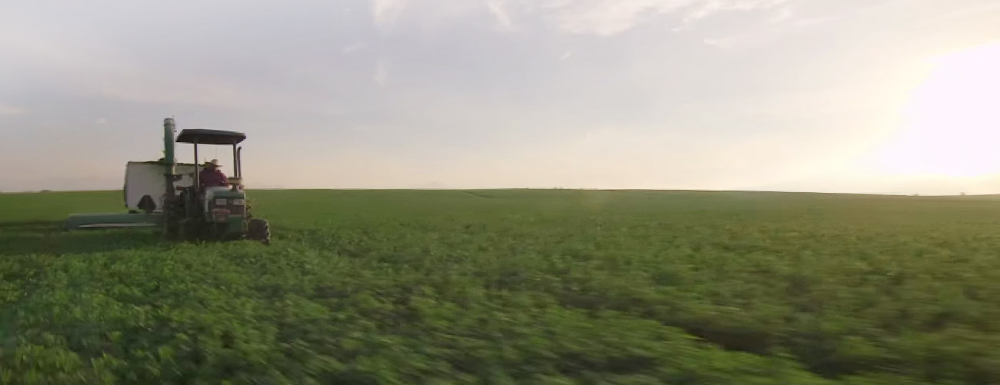
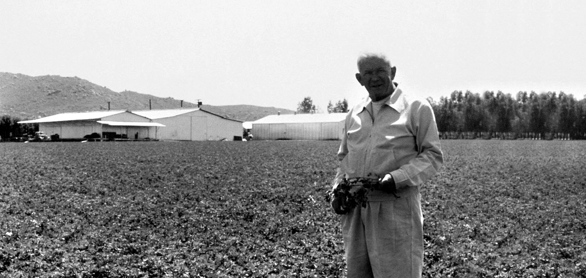
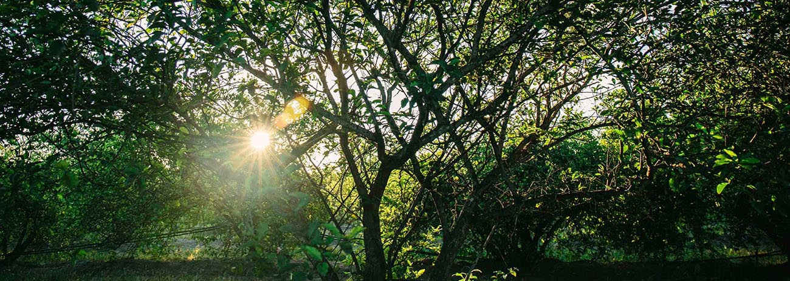

ABOUT
探索品牌
全球銷售第一維生素及營養補充品的紐崔萊，邀您探索百年來幫助人們邁向極致健康的足跡！
 品牌源起
品牌源起
一百年前，紐崔萊創辦人卡爾仁伯深入中國社會，發現營養價值極高的紫花苜蓿，更從中醫藥理獲得啟發，決心研發天然植物濃縮萃取技術。1934年創立紐崔萊，革命性的營養補充理念，成為植物營養素的先驅與領導者，80多年來持續探索，運用尖端科技萃取植物菁華，幫助全球人們邁向極致健康。

品牌信仰
紐崔萊相信，植物蘊藏的豐富營養就是大自然賜予人類最珍貴的禮物！善用大自然的力量孕育優良的植物原料，鍥而不捨地持續探索，並以尖端科技萃取其中的天然菁華，幫助人們邁向極致健康，這是紐崔萊從現在到未來堅持不變的信念。


分享至